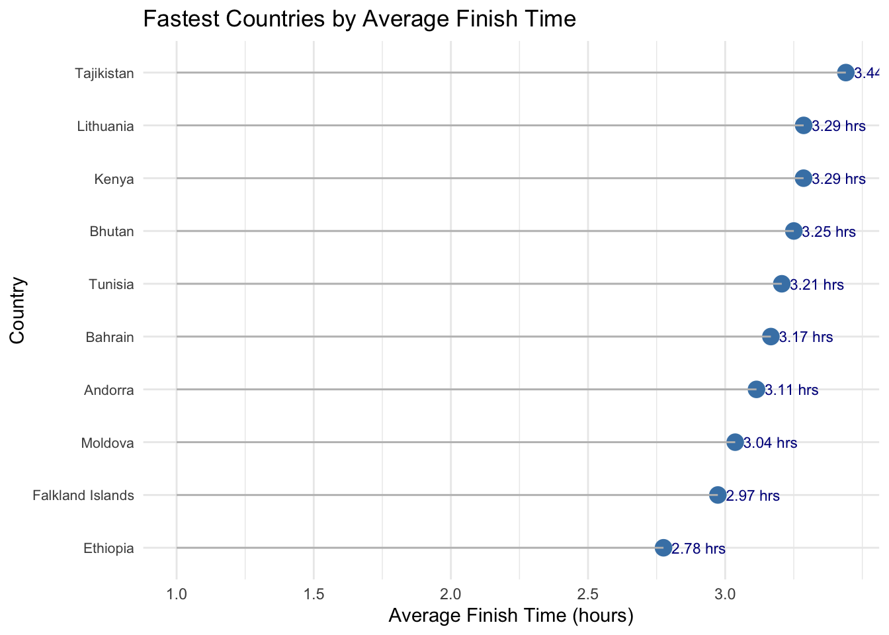

ggplot(marathon_data_clean, aes(x = age)) +geom_histogram(binwidth =5, bins =30, boundary=0, fill ="skyblue", color ="black", alpha =0.7) +labs(title ="Age Distribution of Marathon Participants", x ="Age", y ="Participant Count") +scale_x_continuous(breaks =seq(0, 95, by =5)) +theme_minimal()
Observations: The distribution of participant ages is right-skewed with participants as old as 88. Most of the runners fall between 25 and 40 with a majority being between 25 and 30 years old. Median age is 43.6 years.
3.2 Young Women Leading the Pack for the Future
Code
gender_clean <- marathon_data_clean |>filter(gender %in%c("M", "W"))gender_clean <- gender_clean |>mutate(age_group =case_when( age <18~"17 and under", age >=18& age <=29~"18-29", age >=30& age <=39~"30-39", age >=40& age <=49~"40-49", age >=50& age <=59~"50-59", age >=60~"60+",TRUE~"Unknown" ))gender_age_percentages <- gender_clean |>group_by(age_group, gender) |>summarise(count =n(), .groups ='drop') |>group_by(age_group) |>mutate(percentage = (count /sum(count)) *100)ggplot(gender_age_percentages, aes(x = percentage, y = age_group, fill = gender)) +geom_bar(stat ="identity", position ="stack", width =0.7) +labs(title ="Gender Participation by Age Group",x ="Percentage of Participants (%)", y ="Age Group") +theme_minimal() +theme(axis.text.x =element_text(angle =45, hjust =1))
Observations: In the youngest age group of 18-29, women make up a majority of participants which is somewhat surprising and inspiring! Men take the majority in the other age brackets but maybe we’ll see this change as those younger women continue their run journies into later ages!
3.3 Spaghett out of Italy’s Way!
Code
marathon_data_filter_us <- marathon_data_clean |>filter(countryCode !="USA") |>group_by(countryCode) |>summarise(participant_count =n()) |>arrange(desc(participant_count)) |>top_n(10, participant_count)ggplot(marathon_data_filter_us, aes(x=reorder(countryCode, -participant_count), y = participant_count)) +geom_bar(stat ="identity", fill ="purple") +geom_text(aes(label = participant_count), vjust =-0.3, size =3) +labs(x="Country", y="Participant Count", title =" Participants by Country (Excluding USA)") +theme(axis.text.x =element_text(angle =45, hjust =1))
Observation: There are participants from 136 countries, covering all continents. Excluding the US since it’s the host country, we can see that a majority of runners come from Europe and the Americas with Italy topping the list with 2,345 runners! Do these countries produce winners with the fastest times?
3.4 Speed Kings of Ethoipia
Code
library(lubridate)country_lookup <-c(ETH ="Ethiopia",FLK ="Falkland Islands",MDA ="Moldova",AND ="Andorra",BHR ="Bahrain",TUN ="Tunisia",BTN ="Bhutan",KEN ="Kenya",LTU ="Lithuania",TJK ="Tajikistan")country_codes <-c("ETH", "FLK", "MDA", "AND", "BHR", "TUN", "BTN", "KEN", "LTU", "TJK")country_names <- country_lookup[country_codes]country_avg_time <- marathon_data_clean |>group_by(countryCode) |>mutate(overallTime =hms(overallTime), # Parse to 'Period' objectoverallTimeSec =as.numeric(overallTime),countryCode =if_else(countryCode =="Sai", "SAI", countryCode)) |>arrange(desc(overallTimeSec)) |>summarise(avg_time_sec =mean(overallTimeSec, na.rm =TRUE)) |>arrange(avg_time_sec) |>head(10) |>mutate(avg_time_hours = avg_time_sec /3600)# Use the lookup table to add country names to the data framecountry_avg_time <- country_avg_time |>mutate(countryName = country_lookup[countryCode])# Plot average finish times in hours using full country namesggplot(country_avg_time, aes(x = avg_time_hours, y =reorder(countryName, avg_time_hours))) +geom_point(size =4, color ="steelblue") +geom_segment(aes(xend =1, yend = countryName), color ="gray") +geom_text(aes(label=paste(round(avg_time_hours,2),"hrs")), vjust = .5, hjust =-0.15, color ='darkblue', size =3) +labs(title ="Fastest Countries by Average Finish Time",x ="Average Finish Time (hours)",y ="Country") +scale_x_continuous(breaks =seq(1, max(country_avg_time$avg_time_hours), by =0.5), limits =c(1, max(country_avg_time$avg_time_hours))) +theme_minimal() +theme(axis.text.y =element_text(size =8))

Observations: We calculated the average finish time per country and plotted the 10 fastest here. It’s interesting that the countries with the most participants aren’t in the list of top 10 fastest countries - this could suggest that runners in the more represented countries complete marathons as recreational or amateur athletes whereas runners from Ethiopia potentially take the sport more serious.
3.5 The Age Groups that Leave Everyone in the Dust
Code
gender_clean <- gender_clean |>filter(!is.na(overallTime)) |>mutate(overallTime =hms(overallTime), # Parse to 'Period' objectoverallTimeSec =as.numeric(overallTime))gender_age_avg_time <- gender_clean |>group_by(gender, age_group) |>summarise(avg_time_sec =mean(overallTimeSec, na.rm =TRUE)) |>mutate(avg_time_hours = avg_time_sec /3600)ggplot(gender_age_avg_time, aes(x = age_group, y = avg_time_hours, color = gender, group = gender)) +geom_point(size =4) +# Plot pointsgeom_line() +# Connect points with linesgeom_text(aes(label =round(avg_time_hours, 2)), vjust =-0.5, color ='black') +# Add labels for average timeslabs(title ="Fastest Age Group by Gender",x ="Age Group",y ="Average Finish Time (hours)",color ="Gender") +theme_minimal() +theme(axis.text.x =element_text(angle =45, hjust =1))
Observations: As runners get older, the gender gap decreases in overall finish times. These differences could be explained by physiological differences between men and women overall as well as the fact that there are less women across the age groups besides the 18-29 group.
3.6 Waves of Speed: How Age Shapes the Run Time Landscape
Code
library(ggridges) gender_clean <- gender_clean |>mutate(overallTimeSec =as.numeric(hms(overallTime)),avg_time_hours = overallTimeSec /3600)# Ridgeline density plot for finish times by age groupggplot(gender_clean, aes(x = avg_time_hours, y = age_group)) +geom_density_ridges(fill ="yellow", alpha =0.6) +# Ridges for density plotscale_x_continuous(labels = scales::comma) +# Format x-axis with commaslabs(title ="Distribution of Finish Times by Age Group", x ="Finish Time (hours)", y ="Age Group") +theme_minimal() +theme(axis.text.y =element_text(size =8), axis.text.x =element_text(size =10))
Observation: There’s a slight shift in median finish times as we progress through the age groups but a peak remains present around 3.5 hours across all age groups, some just have sharper peaks. The ridges get wider as the runners get older indicating a larger spread of finish times in those groups. Most of the ridges are right-skewed showing that most participants across the different age groups finish faster than they do slower.
3.7 More Races, Faster Paces?
Code
gender_clean <- gender_clean |>mutate(overallTimeSec =as.numeric(hms(overallTime)),avg_time_hours = overallTimeSec /3600)ggplot(gender_clean, aes(x = racesCount, y = avg_time_hours)) +geom_point(alpha =0.3, size=0.5, color ="steelblue") +geom_smooth(method ="lm", color ="red", se =FALSE) +# Regression linefacet_wrap(~ age_group, scales ="free") +labs(title ="Correlation between Race Count and Finish Time", x ="Number of Races Completed", y ="Finish Time (hours)") +theme_minimal()
Observations: Interestingly, by plotting the regression line we can see that there really isn’t a correlation between races completed and finish time until the older age groups. Runners 50 years of age and older show a positive correlation between number of races completed and their finish times for the 2024 NYC marathon.
This is good news since Sara and Andrea have 0 races to their names - both still have a fighting chance!
3.8 East or West Coast Best Coast?
Code
marathon_data_clean <- marathon_data_clean |>mutate(age_group =case_when( age >=18& age <=29~"18-29", age >=30& age <=39~"30-39", age >=40& age <=49~"40-49", age >=50& age <=59~"50-59", age >=60~"60+",TRUE~"Unknown" ))us_state_abbreviations <-c("AL", "AK", "AZ", "AR", "CA", "CO", "CT", "DE", "FL", "GA", "HI", "ID", "IL","IN", "IA", "KS", "KY", "LA", "ME", "MD", "MA", "MI", "MN", "MS", "MO", "MT","NE", "NV", "NH", "NJ", "NM", "NY", "NC", "ND", "OH", "OK", "OR", "PA", "RI","SC", "SD", "TN", "TX", "UT", "VT", "VA", "WA", "WV", "WI", "WY")state_avg_times <- marathon_data_clean |>filter(countryCode =="USA"& stateProvince %in% us_state_abbreviations) |>group_by(stateProvince, age_group) |>mutate(overallTime =hms(overallTime),overallTimeSec =as.numeric(overallTime)) |>mutate(avg_time_hours = overallTimeSec /3600) |>summarise(avg_time_hours =mean(avg_time_hours, na.rm=TRUE))
`summarise()` has grouped output by 'stateProvince'. You can override using the
`.groups` argument.
Code
ggplot(state_avg_times, aes(x = stateProvince, y = age_group, fill = avg_time_hours)) +geom_tile() +scale_fill_viridis_c() +labs(x ="State", y ="Age Group", title ="Average Marathon Time by State and Age Group") +theme(axis.text.x =element_text(angle =45, hjust =1, size =7))
Observations: With this heat map we can explore runners across the US based on their state. Some of the slowest runners come from Montana, Mississipi, and Alabama in the older age brackets of 50 and up. Some of the fastest runners are from Montana (younger age group) with a surprising fast time for Hawaii participants age 60 and older! Wow, must be that aloha spirit! Our home states of VA and CA are pretty evenly matched across the age-groups so this metric won’t help us determine which of us is best suited for the marathon.
3.9 What’s in a Name?
Code
selected_names <-c("Sara", "Sarah", "Andrea")filtered_data <- marathon_data_clean |>filter(gender =="W"& firstName %in% selected_names)# Convert pace to numeric if necessaryfiltered_data <- filtered_data |>mutate(pace_num =sapply(pace, function(p) { parts <-strsplit(p, ":")[[1]]as.numeric(parts[1]) +as.numeric(parts[2])/60 }))# Plot run times (pace) for selected female runnersggplot(filtered_data, aes(x = firstName, y = pace_num)) +geom_boxplot(aes(color = firstName), outlier.size =3) +labs(x ="Runner Name", y ="Pace (min/mile)", title ="Run Times for Female Runners (Sara, Sarah, Andrea)") +theme_minimal()
Observations: Okay maybe Sara(h) has a slight leg up on Andrea but not by much. Sara(h) is also a lot more common of a name with about 400 runners listed under that name and only around 190 runners named Andrea. Realistically, we know name doesn’t make for a faster runner but we’ll take anything we can to get a leg up!